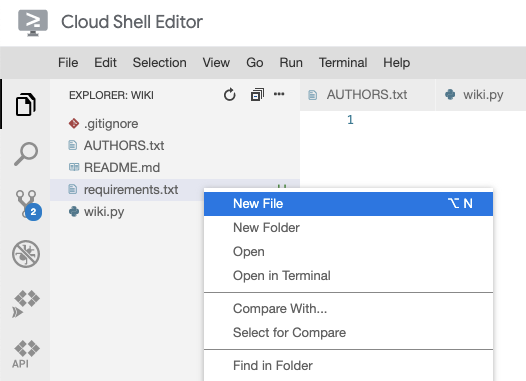
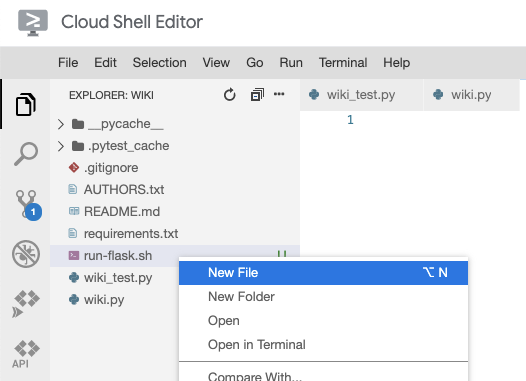

In this codelab, you'll create and run a "hello world" Flask application. You'll also practice collaborating in real-time with your teammates on a shared code repository.
In this codelab, you'll be working with your project groups on your wiki implementation. Open the source code for the wiki in Cloud Shell Editor.
Next, add the "boilerplate" files needed for a Flask web application.
wiki.py file that prints "Hello, World!". print("Hello, World!")
python wiki.py
If you successfully saw "Hello, World!" printed in the previous step, commit your changes and push them to GitLab so that your teammates can benefit from your work.
git add .
The "." says to add all files Git finds in the current directory or sub-directories.
git status
You should see the following output:
Changes to be committed:
(use "git rm --cached <file>..." to unstage)
new file: wiki.py
If you see files you don't expect, check your ".gitignore" file to make sure it matches the recommended file at https://github.com/github/gitignore/blob/master/Python.gitignore.
git commit -m 'add wiki Python module'
git push origin main
Download the code that your teammate just pushed and merge it with your local copy.
git fetch origin main
git merge origin/main
If conflicts arise, refer to the Handling Conflicts with Git codelab.
python wiki.py
Your wiki depends on more than just the Python built-in modules. In a team environment, it's important to document which packages your application depends on so that your teammates can also run the code.
By convention, Python developers create a file named "requirements.txt" containing the package names and versions of all the necessary packages to run your application.
requirements.txt to indicate which packages your code depends on. Flask==1.1.2 pytest==6.2.3
pip install -r requirements.txt
Since you've already installed the necessary packages in the Using Python with Cloud Shell codelab, you should see "Requirement already satisfied".
Commit your changes and push them to GitLab so that your teammates can benefit from your work.
git add .
The "." says to add all files Git finds in the current directory or sub-directories.
git status
You should see the following output:
Changes to be committed:
(use "git rm --cached <file>..." to unstage)
new file: requirements.txt
git commit -m 'add list of app dependencies'
git push origin main
Download the code that your teammate just pushed and merge it with your local copy.
git fetch origin main
git merge origin/main
pip install -r requirements.txt
It's good software engineering practice to have tests. Create a test file for your code.
import wiki
def test_import():
assert wiki is not None
pytest wiki_test.py
You should see that 1 test has passed.
Commit your changes and push them to GitLab so that your teammates can benefit from your work.
git add .
The "." says to add all files Git finds in the current directory or sub-directories.
git status
You should see the following output:
Changes to be committed:
(use "git rm --cached <file>..." to unstage)
new file: wiki_test.py
git commit -m 'add list of app dependencies'
git push origin main
Download the code that your teammate just pushed and merge it with your local copy.
git fetch origin main
git merge origin/main
pytest wiki_test.py
Create a "Flask" application to be the web server for your wiki.
wiki.py file with the code to create a Flask server.from flask import Flask
app = Flask(__name__)
@app.route("/")
def main():
return "Hello, World!\n"
export FLASK_APP=wiki export FLASK_ENV=development flask run -p 8080
curl localhost:8080
You should see "Hello, World!" printed.
Commit your changes and push them to GitLab so that your teammates can benefit from your work.
git add .
The "." says to add all files Git finds in the current directory or sub-directories.
git status
You should see the following output:
Changes to be committed:
(use "git rm --cached <file>..." to unstage)
modified: wiki.py
git commit -m 'create Hello World Flask application'
git push origin main
Download the code that your teammate just pushed and merge it with your local copy.
git fetch origin main
git merge origin/main
export FLASK_APP=wiki export FLASK_ENV=development flask run -p 8080
curl localhost:8080
You should see "Hello, World!" printed.
Since it can be hard to remember the three commands to start the Flask server, create a script with these commands.
run-flask.sh in the root directory of the repository. #!/usr/bin/env bash
export FLASK_APP=wiki
export FLASK_ENV=development
flask run -p 8080
chmod command.chmod +x run-flask.sh
Cloud Shell provides a web preview feature, which allows you to access your Flask server from a web browser. It prevents access from anyone but you by using your Google credentials.
Run the server and use the Cloud Shell web preview to access it.
./run-flask.sh
If you successfully saw "Hello, World!" printed in the previous step, commit your changes and push them to GitLab.
git add .
The "." says to add all files Git finds in the current directory or sub-directories.
git status
You should see the following output:
Changes to be committed:
(use "git reset HEAD <file>..." to unstage)
new file: run-flask.sh
git commit -m 'add command to run Flask server'
git push origin main
Download the code that your teammate just pushed and merge it with your local copy.
git fetch origin main
git merge origin/main
./run-flask.sh
It's important to add automated tests for all application code to ensure that your project continues to work as expected after making code changes. This is especially important when there are multiple contributors to the project.
Add tests to check that the Flask application is working properly.
import pytest
import wiki
@pytest.fixture
def client():
wiki.app.config["TESTING"] = True
with wiki.app.test_client() as client:
yield client
def test_import():
assert wiki is not None
def test_homepage(client):
resp = client.get("/")
assert resp.status_code == 200
assert b"Hello, World!\n" in resp.data
The "client" function is a pytest fixture that creates a Flask test client ( api reference, additional reference). This allows you to add a "client" argument to your tests, which you can use to make requests to your Flask application.
The result of calling the "client.get()" method is a Response object, which contains useful properties such as "status_code" and "data". The assertions check that these are the expected values.
pytest .
If the test passed in the previous step, commit your changes and push them to GitLab.
git add .
git status
You should see the following output:
Changes to be committed:
(use "git reset HEAD <file>..." to unstage)
modified: wiki_test.py
git commit -m 'add test for home page'
git push origin main
Download the code that your teammate just pushed and merge it with your local copy.
git fetch origin main
git merge origin/main
pytest .
Double-check that the code has been pushed by viewing the code on GitLab.
You now have the necessary files in place to continue developing your wiki. In the Milestone 1 description, you will receive additional instructions about the expected next steps.
Continue to work together as a group, pushing your changes when you've added a feature, and pulling your teammates' changes often.